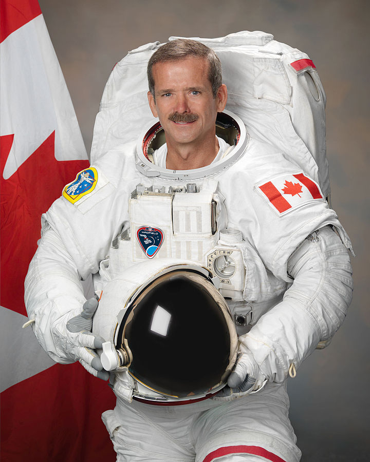

Chris Hadfield
Canadian Astronaut

Chris Hadfield
Some quick information
- Chris Austin Hadfield OC OOnt MSC CD (born August 29, 1959) is a Canadian retired astronaut, engineer, and former Royal Canadian Air Force fighter pilot. The first Canadian to walk in space, Hadfield has flown two space shuttle missions and served as commander of the International Space Station.
- Hadfield, who was raised on a farm in southern Ontario, was inspired as a child when he watched the Apollo 11 Moon landing on TV. He attended high school in Oakville and Milton and earned his glider pilot licence as a member of the Royal Canadian Air Cadets. He joined the Canadian Armed Forces and earned an engineering degree at Royal Military College. While in the military he learned to fly various types of aircraft and eventually became a test pilot and flew several experimental planes. As part of an exchange program with the United States Navy and United States Air Force, he obtained a master's degree in aviation systems at the University of Tennessee Space Institute.
- Chris Hadfield OC OOnt MSC CD Chris Hadfield 2011.jpg CSA astronaut Nationality Canadian Status Retired Born Chris Austin Hadfield 29 August 1959 (age 59) Sarnia, Ontario, Canada Other occupation Test pilot Musician Rank Commander, CSA & NASA Colonel, RCAF fighter pilot (retired) Time in space 166 days Selection 1992 CSA Group Total EVAs 2 Total EVA time 14 hours 53 minutes and 38 seconds Missions STS-74, STS-100, Soyuz TMA-07M (Expedition 34/35) Mission insignia Sts-74-patch.png STS-100 patch.svg Soyuz-TMA-07M-Mission-Patch.png ISS Expedition 34 Patch.svg ISS Expedition 35 Patch.svg Retirement July 3, 2013 Awards Order of Canada (2014) Diamond Jubilee Medal (2012) NASA Exceptional Service Medal (2002) Golden Jubilee Medal (2002) Vanier Award (2001) Order of Ontario (1996) Website chrishadfield.ca Chris Austin Hadfield OC OOnt MSC CD (born August 29, 1959) is a Canadian retired astronaut, engineer, and former Royal Canadian Air Force fighter pilot. The first Canadian to walk in space, Hadfield has flown two space shuttle missions and served as commander of the International Space Station. Hadfield, who was raised on a farm in southern Ontario, was inspired as a child when he watched the Apollo 11 Moon landing on TV. He attended high school in Oakville and Milton and earned his glider pilot licence as a member of the Royal Canadian Air Cadets. He joined the Canadian Armed Forces and earned an engineering degree at Royal Military College. While in the military he learned to fly various types of aircraft and eventually became a test pilot and flew several experimental planes. As part of an exchange program with the United States Navy and United States Air Force, he obtained a master's degree in aviation systems at the University of Tennessee Space Institute. In 1992, he was accepted into the Canadian astronaut program by the Canadian Space Agency. He first flew in space aboard STS-74 in November 1995 as a mission specialist. During the mission he visited the Russian space station Mir. In April 2001 he flew again on STS-100 and visited the International Space Station (ISS), where he walked in space and helped to install the Canadarm2. In December 2012 he flew for a third time aboard Soyuz TMA-07M and joined Expedition 34 on the ISS. He was a member of this expedition until March 2013 when he became the commander of the ISS as part of Expedition 35. He was responsible for a crew of five astronauts and helped to run dozens of scientific experiments dealing with the impact of low gravity on human biology. During the mission, he also gained popularity by chronicling life aboard the space station and taking pictures of the Earth and posting them on various social media platforms to a large following of people around the world. He was a guest on television news and talk shows and gained popularity by playing the International Space Station's guitar in space. His mission ended in May 2013 when he returned to Earth. Shortly after returning, he announced his retirement, capping a 35-year career as a military pilot and an astronaut.
For more information please see Chris Hadfield's Wiki here: Chris Hadfield's Wiki